AI2002 Software Category project, Path A (software application with a trained model, deployed with Streamlit).
Every number in this report is filled in by scripts/build_report.py from the saved result files; figures come from scripts/make_figures.py.
Problem. A 2D platformer level is a grid of tiles, and a designer's first draft is slow to build by hand. Procedural generators are either random (hard to steer) or learned without any control from words, and almost none check that the result can be finished. We build a system that turns one typed sentence (for example "flat ground, one pipe, then several coins and a staircase") into a full Super-Mario-style level that has been checked for beatability and can be played immediately in the browser.
Who needs it. (U1) an indie/hobbyist designer who wants several steerable first drafts and an export to an editable tile format; (U2) a student or teacher of procedural content generation who wants an inspectable, honest end-to-end example; (U3) anyone given the app link. No interviews or surveys were done; these are stated needs, not measured demand. The only claims made below are measured ones.
Selected path. Path A: a trained machine-learning model is the core of a Streamlit application (deployed on Streamlit Community Cloud).
Input and output. Input: one sentence (1-400 characters), a width in {16, 48, 80, 112} generated columns, a guidance strength w, a seed. Output: a framed level of 16 rows of 13 tile types, the canonical caption(s) the model actually received, a verification badge, a PNG, a playable game, and exports (level JSON, CSV, VGLC text, standalone HTML).
Objectives. O-1 content follows the prompt (caption adherence); O-2 structures stay valid (no broken pipes or cannons); O-3 verify beatability and measure how far that verification can be trusted; O-4 do not copy training windows; O-5 evaluate honestly on unseen levels (level-grouped split, one-shot test); O-6 a working, deployed Streamlit app.
Why a neural network. Rules and templates can place pipes and gaps but cannot learn the joint structure of real level segments (which floors, platforms, enemies and pipes occur together) from 42 levels. A tile diffusion model generates a whole 16x16 window by iterative refinement, so a pipe's cap and body appear together; it supports classifier-free guidance (a controllable strength of prompt adherence) and overlap-consistent outpainting (RePaint) for long levels. The main alternative, an autoregressive tile model, generates left to right and cannot revise a column once written.
Originality and attribution. The dataset, the caption grammar and the idea of text-conditioned diffusion for Mario levels come from MarioDiffusion (Schrum et al., arXiv 2507.00184, MIT licence). Our own work: the level-grouped locked split and leakage tests, the caption detector (written from the grammar description and verified against all 7,687 stored captions), the diffusion maths and U-Net implementation, the trainer, the prompt normalizer, the C-score re-implementation (checked on 12 golden vectors), the playability checker, the Phaser game, the generation pipeline, the app and the evaluation. No third-party code is imported; the reference solver
MarioEval.jaris only run as a separate process.
Source and relevance. The MarioDiffusion corpus: 7,687 windows of 16x16 tiles from 42 levels (20 of Super Mario Bros, 22 of The Lost Levels), each with
a machine-written caption (e.g. full floor. a few enemies. two pipes.). Levels are reconstructed from overlapping windows (window i+1 is window i shifted one column),
which recovers all 42 level chains byte-for-byte. Relevance: it is a public, level-structured corpus with captions in a fixed grammar of 16 concepts and 5 quantity buckets.
Features and target. A window is a 16x16 grid over 13 tile classes (sky, four pipe parts, question block (full/empty), breakable block, ground, cannon top and support, enemy, coin). It is represented as a {-1, +1} one-hot tensor of shape 13x16x16, which is the diffusion variable x0. The conditioning input is the caption text; the target of the denoiser is the added noise. Preprocessing is done once and identically for training and inference: the same one-hot encoder, the same MiniLM encoder and adapter, and the same normalizer (the app calls the same code as training).
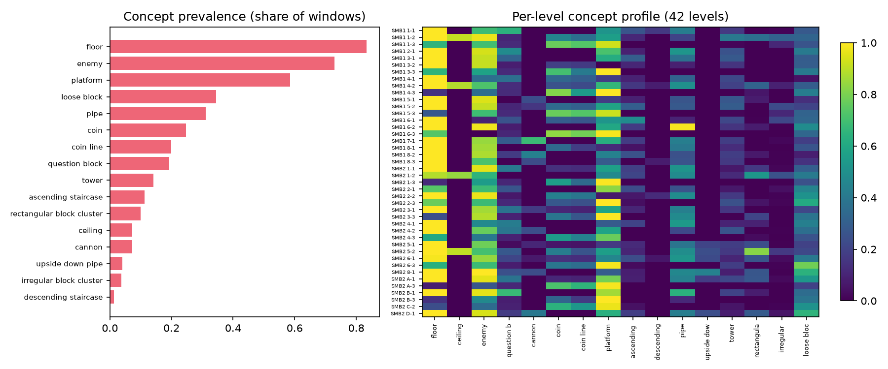
Figure EDA. Concept prevalence (left) and the very different profile of each of the 42 levels (right); tiles and captions:reports/eda/EDA.md. Sky is 87 % of all cells and the rarest concepts are below 5 % of windows.
Splitting and leakage prevention. The 42 levels are split by level (31 train, 5 dev, 6 test; 5,709 / 905 / 1,073 windows), never by window, because windows
overlap by 15 of 16 columns. Near-duplicate level families (the two games share many levels) are kept in one split. The split is chosen by an exhaustive
deterministic search (seed 20261117), hashed into data/splits/LOCK, and any edit raises an error. Tests assert that no level is in two splits, that the test windows can
not be loaded before FROZEN.json exists, and that dev tooling refuses the test prompts. Hyper-parameters, checkpoints, the CFG scale and every threshold were
chosen on dev only. The provided train/validate/test files of the original repository are never used.
Caption detector. The detector that reads a caption off any grid (used for metrics and for the normalizer's inverse) was written from the grammar description and reproduces 7,687 / 7,687 stored captions exactly (a strong check that our understanding of the data is right).
Diffusion in one paragraph. Forward process: x_t = sqrt(abar_t) x_0 + sqrt(1 - abar_t) eps with eps ~ N(0, I) over T = 1000 steps; a network eps_theta(x_t, t, c) is trained to predict eps (mean-squared error), so x_0 can be recovered as (x_t - sqrt(1-abar_t) eps_hat) / sqrt(abar_t). Two noise schedules were compared: linear and cosine (both computed in float64; the oracle test "perfect eps gives exact reconstruction" passes for both). Sampling uses DDIM with 50 steps (eta = 0, deterministic), the predicted x_0 is clipped to [-1, 1] at every step, and the final tile is the arg-max over the 13 channels. The error in eps-space equals SNR-weighted error in x0-space, so the loss is tiny where the picture is easy; we therefore monitor the loss per noise bucket against a computed "context-free floor" (the best a denoiser could do looking at each pixel alone).
Architecture (18,312,013 parameters). A U-Net over 16x16 inputs with channel multipliers (1, 2, 4) from 64 base channels: residual blocks with GroupNorm and a sinusoidal time embedding, self-attention at the 8x8 and 4x4 levels, and cross-attention to the text tokens at the same levels. Input: 13x16x16 noisy tiles, timestep, text context; output: 13x16x16 predicted noise. The last layers are zero-initialised, which gives an initial loss of about 1.0 (we verify it).
Text conditioning (adds 66,048 trainable parameters). The caption is encoded by a frozen MiniLM (all-MiniLM-L6-v2) into token states (no pooling), mapped by a small trainable adapter (MLP + LayerNorm) to the U-Net's 128-d context. A test asserts that the optimiser holds exactly the U-Net and adapter parameters (18,378,061) and no MiniLM tensor. During training 10 % of captions are replaced by the empty caption, which is what makes classifier-free guidance possible: eps = eps_u + w (eps_c - eps_u). Captions are augmented (phrase dropout, shuffling, synonym substitution using only the train half of a lexicon).
Long levels by outpainting. A level is built from 16x16 windows with a stride of 8: window k+1 keeps the right 8 columns of window k as a known region (RePaint: at every step the known region of x_t is replaced by its forward-noised known tiles, with 2 resampling jumps in the first 60 % of steps). The result is framed by 3 floor columns in front and a 6-column end template (stairs and flag).
Why this is appropriate. The model must generate structured grids that are globally coherent (a pipe is a 2-wide object with a cap), controllable by text, and diverse; diffusion with cross-attention and guidance gives all three, trains stably on 5.7k windows with a small network (peak 0.77 GiB of GPU memory), and its sampling interface (known-region replacement) gives long levels for free.
Key settings (all in configs/*.yaml): AdamW, lr 2e-4 with 1,000 warm-up steps and cosine decay to 1e-5, weight decay 0.01 (not on norms/biases), gradient clip 1.0,
batch 64, bf16 autocast, EMA 0.999 (evaluation always uses the EMA weights), 15,000 steps unconditional / 60,000 conditional, VRAM cap 4.5 GiB.
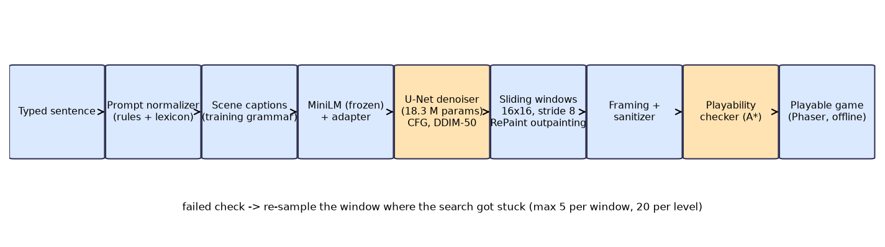
Figure 1. From a typed sentence to a playable, checked level.Pipeline. text/normalizer.py (rules + lexicon: synonyms, number words, vague quantities, negation, multi-scene splitting, clamping to the buckets seen in training)
→ text/conditioner.py → models/unet.py + diffusion/ → generate/full_level.py (windows, outpainting, framing) → generate/sanitizer.py (detect broken pipes/cannons on the
raw grid; optional display repair) → playability/checker.py → resample the window where the search stalled (at most 5 attempts per window, 20 per level) →
render/ (PNG, JSON, CSV, VGLC, one-file offline HTML) → app/streamlit_app.py.
Prompt normalizer. 30/30 exact matches on the 30 development prompts (topic F1 1.00) and 100 % passthrough of the 2,668 distinct stored captions.
Playability checker. A* over standing cells with jump arcs simulated with the same integrator as the game (gravity, wall blocking, head bumps, landing), then limited by
conservative human margins. The physics numbers live in one file (app/static/game/physics.json, shared by checker and game); scripts/derive_physics.py derives the jump
envelopes from it. Enemies are treated as killable (stomp). "Verified" means the checker found a route under the game's physics, not a proof for every player.
Game. Phaser 3.90.0 (MIT) with Kenney Pixel Platformer sprites (CC0): tile collisions, run/jump with the shared physics, walking enemies with stomp, question blocks, coins, pits and respawn, a flag and a HUD. A level becomes one self-contained HTML file (the engine, level and sprites are inlined), so it works offline and as a download.
Application. Streamlit: prompt box with examples, a preview of what the model will understand (canonical scenes, clamps, ignored words), guidance and width controls, seed, a high-quality toggle (50 steps with resampling; fast mode, 25 steps, is the default and is forced without a GPU), generation with a "route found by the checker (not a guarantee)" badge, the embedded game, and downloads. Input validation rejects empty, over-long or control-character prompts and out-of-range settings with a readable message instead of a stack trace.
Measured latency (this machine; reports/app/latency.json; thresholds were pinned after measuring, not before). Fast mode (25 steps, no resampling, checker budget 1,000 nodes) is the app default:
48 columns 4.8 s median (p95 15.3 s), 112 columns 12.9 s (p95 58.4 s) on the RTX 3060 Ti; CPU fast mode 3.9 s and 25.9 s; cold start 3.6 s.
Full quality (50 steps, resampling) takes 35.5 s and 167.3 s median, dominated by the diffusion passes and by the checker exhausting unsolvable levels, so it is an opt-in toggle. The provisional target of 10 s for 112 columns is not met;
the long p95 comes from levels the checker cannot verify, which use the whole retry budget.
Engineering. 257 automated tests (fast suite) cover data, split leakage, detector, schedules, U-Net, sampler, trainer, text path, normalizer, C-score golden vectors, checker micro-levels, level schema/export, full-level generation with a stub sampler, and input validation; end-to-end tests drive the real game in headless Chromium. Bugs found by this process and fixed (each with a regression test): an LRU-cache eviction that crashed long training runs, a CPU/CUDA generator mismatch that crashed resampling, a pluralisation bug that corrupted caption augmentation ("bad guies"), and a detector crash on generated rows without floor.
Training the unconditional U-Net for 15,000 steps takes about 28 minutes on the RTX 3060 Ti (0.111 s/step, 0.77 GiB peak). The per-noise-bucket dev loss ends below the context-free floor for both schedules (mean 0.0062 against 0.0076 linear; 0.0101 against 0.0116 cosine), i.e. the network uses spatial context. Samples look like levels (Fig. 7). The gate G-P3 FAILED: no checkpoint of any variant has both a broken-structure rate <= 0.05 and a copy rate <= 0.154.
| variant | step | broken rate (gate <= 0.05) | copy rate (gate <= 0.154) | floor validity | median nearest-train Hamming |
|---|---|---|---|---|---|
| linear, MSE | 8000 | 0.207 | 0.039 | 0.988 | 14.0 |
| linear, MSE | 10000 | 0.133 | 0.098 | 0.992 | 11.0 |
| linear, MSE | 12000 | 0.113 | 0.121 | 1.000 | 11.0 |
| linear, MSE | 14000 | 0.066 | 0.148 | 1.000 | 10.0 |
| cosine, MSE | 8000 | 0.250 | 0.031 | 0.938 | 18.0 |
| cosine, MSE | 10000 | 0.121 | 0.082 | 0.969 | 13.0 |
| cosine, MSE | 12000 | 0.102 | 0.121 | 0.984 | 10.0 |
| cosine, MSE | 14000 | 0.070 | 0.137 | 0.992 | 9.0 |
| linear, aux CE 0.001 | 8000 | 0.055 | 0.305 | 0.992 | 7.0 |
| linear, aux CE 0.001 | 10000 | 0.023 | 0.359 | 0.996 | 6.5 |
| linear, aux CE 0.001 | 12000 | 0.023 | 0.395 | 0.996 | 6.0 |
| linear, aux CE 0.001 | 14000 | 0.027 | 0.414 | 0.992 | 5.0 |
| cosine, aux CE 0.001 | 10000 | 0.051 | 0.324 | 0.996 | 7.0 |
| cosine, aux CE 0.001 | 15000 | 0.027 | 0.398 | 1.000 | 5.5 |
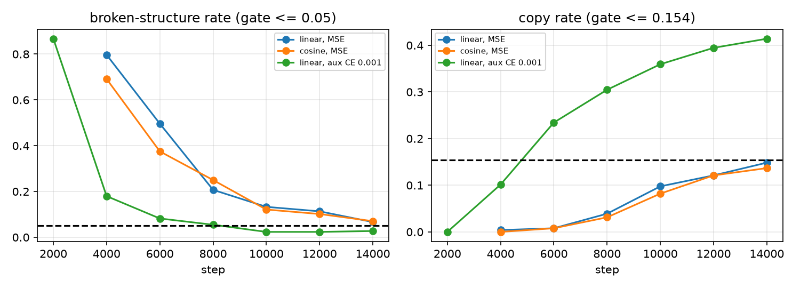
Figure 3. Broken structures fall with training while copying rises; auxiliary cross-entropy (lambda 0.001) removes broken structures faster but memorises much more.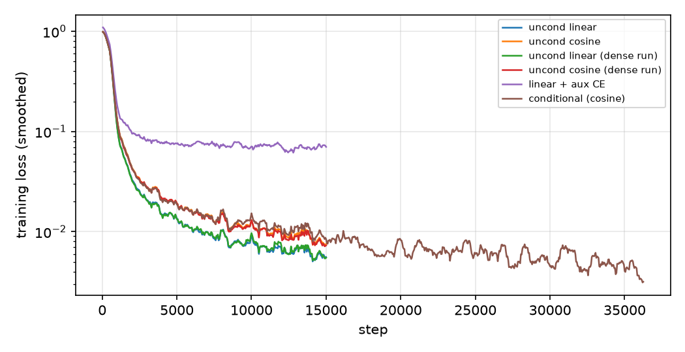
Figure 2. Training loss of the runs (smoothed, log scale).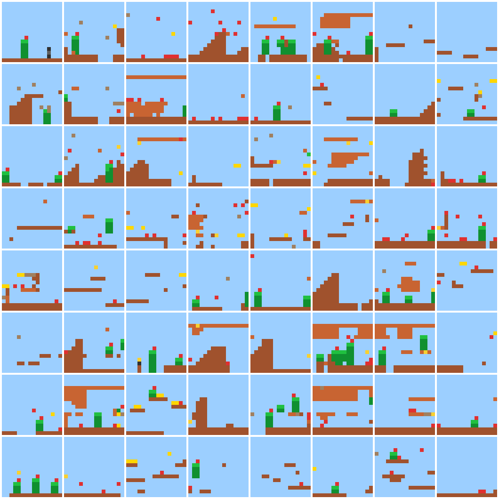
Figure 7. 64 unconditional samples from the cosine baseline (EMA weights, DDIM-50).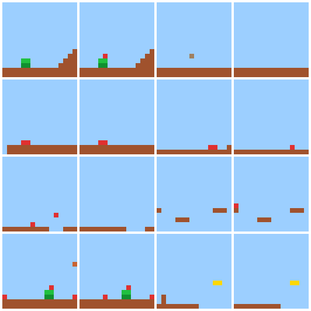
Figure 10. Memorisation check: the samples closest to the training set, each beside its nearest training window.The rollback matrix (R-3.4, R-3.6) prescribes auxiliary cross-entropy for broken structures and an earlier stop for copying. We tried both with dense checkpoints: the closest
points are linear 14k (broken 0.066 / copy 0.148) and cosine 14k (0.070 / 0.137); at equal steps cosine is better on both axes, so cosine was chosen (ties go to cosine in the
design). The gate is therefore recorded as failed, with a documented waiver (reports/gates/P3/WAIVER.md): the conditional model, which is the product, is judged by
its own, stricter-in-practice metrics below. We did not train longer to hide the problem.
C-main (cosine, 60,000 steps) is evaluated on the 115 dev prompts x 3 seeds. Selection among milestones uses S_noplay = 0.5 C + 0.25 (1 - broken) + 0.25 min(1, novelty/reference) because the playability term may only be used after the checker is validated (it was not, section 5.4). The frozen model is step 18000 (cosine) with guidance w = 7.500.
| Gate G-P4 check | Result |
|---|---|
| P4.01 dev C-score at w* (target >= 0.75) | 0.7945 (95% CI 0.714 to 0.877) PASS |
| P4.02 guidance helps (paired, level-clustered CI above 0) | 0.0574 (95% CI 0.034 to 0.082) PASS |
| P4.03 optimiser holds exactly U-Net + adapter, no MiniLM | 18378061 PASS |
| P4.04 PDF contrast test (pipes vs enemies/gaps/stairs, 8 seeds) | {'pipes': 8, 'enemy_presence': 5, 'gaps_stairs': 8} FAIL |
C-score null (a realistic level that ignores the prompt): 0.427; improvement over null: 0.367. Gate G-P4: FAIL. The failing check is P4.04: the omitted-enemies prompt still contains enemies (about 3.9 enemy tiles against 5.5 for the enemy prompt; the pipes and the gap/stairs contrasts pass 8/8). The training captions never express absence, so leaving a topic out is only a weak signal; the generator therefore keeps a soft forbid list from the normalizer ("no enemies") and re-samples windows that contain a forbidden concept within the same attempt budget. We report this honestly as a limitation of caption-conditioned generation. Dev metrics at w*: C-score 0.794, exact match 0.043, broken rate 0.087, floor validity 1.000, median nearest-train Hamming 13.000 (real dev windows: 13), copy rate 0.084.
| w | C-score | exact match | broken rate | median novelty | copy rate | S_noplay |
|---|---|---|---|---|---|---|
| 1 | 0.737 | 0.0377 | 0.087 | 10.0 | 0.1246 | 0.7891 |
| 2 | 0.7799 | 0.0406 | 0.1014 | 11.0 | 0.1043 | 0.8261 |
| 3 | 0.7998 | 0.0464 | 0.0609 | 11.0 | 0.1014 | 0.8462 |
| 5 | 0.7964 | 0.0406 | 0.0899 | 12.0 | 0.0957 | 0.8565 |
| 7.5 | 0.7945 | 0.0435 | 0.087 | 13.0 | 0.0841 | 0.8755 |
| 10 | 0.7815 | 0.029 | 0.1188 | 14.0 | 0.0783 | 0.861 |
What does generation add over lookup? The dev prompts are captions of real windows, so a non-learning retrieval baseline (return the training window whose caption best matches) is a fair competitor:
| dev comparator | C-score | exact match | broken rate | copy rate | median novelty |
|---|---|---|---|---|---|
| always empty | 0.489 | 0.000 | - | - | - |
| always full floor | 0.543 | 0.000 | - | - | - |
| always modal | 0.596 | 0.000 | - | - | - |
| retrieval from train | 0.949 | 0.278 | 0.000 | 1.000 | 0.0 |
| model (w = 7.5)* | 0.794 | 0.043 | 0.087 | 0.084 | 13.0 |
Retrieval beats the model on prompt adherence (it returns a real window with exactly the right caption) and has no broken structures, but it can only repeat what it has seen: copy rate 1.0, novelty 0, and no levels longer than a stored window. The model's contribution is novelty at a small structural cost: median nearest-training distance equal to that of real held-out windows (13), a copy rate below 0.10, and arbitrarily long levels by outpainting. We therefore claim no adherence advantage over lookup.
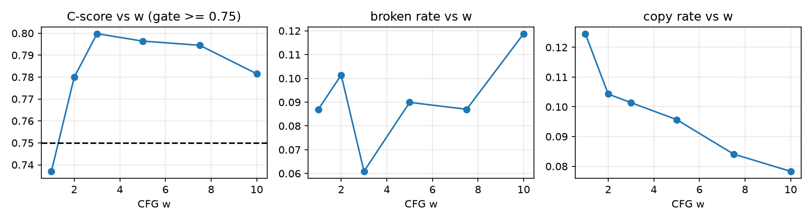
Figure 6. Guidance strength: adherence rises with w, structure quality and copying move the other way.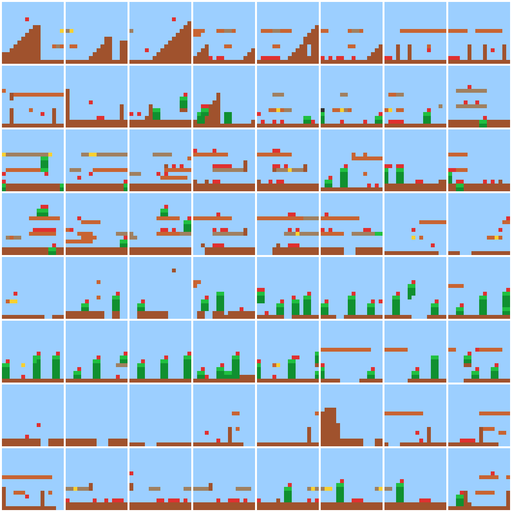
Figure 8. Dev samples of the frozen model at the selected guidance (first 64 of 345; prompts are P-dev captions).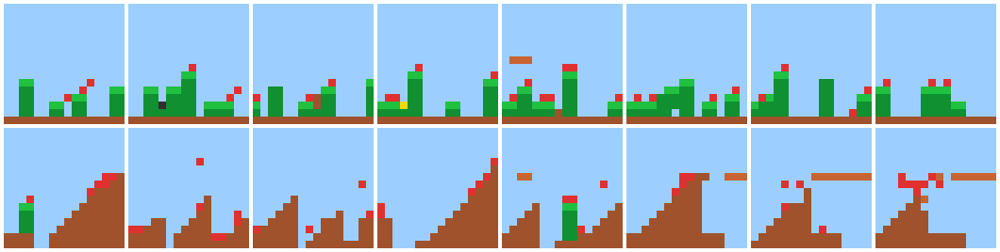
Figure 9. The PDF contrast test (G-P4): top row, "full floor with a few pipes" (8 seeds); bottom row, "floor with one gap, several enemies, one staircase". Pipes and gap/stairs contrast clearly; the enemies do not.Ablation X1 (auxiliary cross-entropy, lambda 0.001, on the conditional model; planned for 40k steps, stopped at 17,640 to relieve memory pressure; dev set, same seeds):
| run | step | C-score (w=5) | broken rate | median novelty | copy rate |
|---|---|---|---|---|---|
| C-main (MSE) | 6000 | 0.669 | 0.330 | 23.0 | 0.026 |
| C-main (MSE) | 12000 | 0.757 | 0.142 | 17.0 | 0.052 |
| C-main (MSE) | 18000 | 0.796 | 0.090 | 12.0 | 0.096 |
| C-main (MSE) | 24000 | 0.805 | 0.072 | 11.0 | 0.157 |
| C-main (MSE) | 30000 | 0.823 | 0.041 | 8.0 | 0.238 |
| C-main (MSE) | 36000 | 0.811 | 0.046 | 8.0 | 0.267 |
| X1 (aux CE 0.001) | 17640 | 0.824 | 0.072 | 12.0 | 0.104 |
Process note, stated plainly: the X1 run was evaluated after C-main had been frozen and tested. At the matched step (17,640 against 18,000) X1 has a higher dev C-score and a lower broken rate with similar novelty and copy rate; under the plan's rule "config v1 = the best dev composite" it would probably have been chosen. Because the one-shot test had already been run on C-main, the test cannot be repeated without breaking its protocol, so C-main remains the reported model and X1 is reported as a dev-only ablation (single checkpoint, 3 seeds, 5 dev levels: the difference is suggestive, not established). Selecting X1 would be the first follow-up.
100 dev levels (50 prompts x 2 seeds, 112 columns, 50 steps, r = 2): seam ratio 1.5435 (95% CI 1.389 to 2.084) FAIL (limit 1.3; real dev levels with pseudo-seams: 1.141),
broken structures after the display repair 0 PASS, verify-loop limits {'max_window': 5, 'max_total': 9} PASS. Pre-repair broken rate 0.340, verified rate 0.780,
95.819 s per level on average (p95 283.936 s). Gate G-P5: FAIL / partial: the verify-loop limits hold and, after the display repair (which deletes every component the detector classifies as broken), no broken structure remains; the seam check fails. The first escalation step of the plan (more RePaint resampling jumps, r = 5) lowered the seam ratio only from 1.47 to 1.38 on 12 paired levels (still above 1.3, within noise, 1.8x the cost; reports/gates/P5/seam_ladder_r.json); stride 4 and direct wide sampling were not tried. The real dev levels with pseudo-seams scatter between 0.75 and 1.6 under the same estimator, so the metric itself is noisy with 31 training levels.
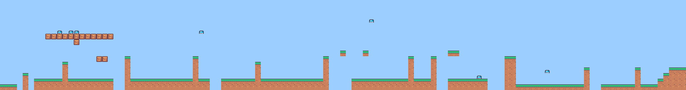
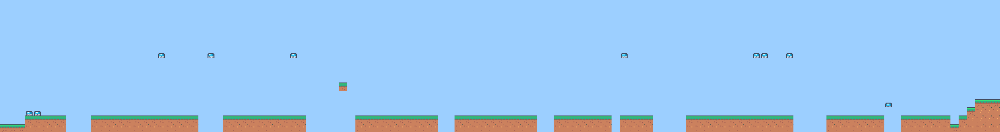
Figure 12. Two generated 112-column levels from the G-P5 set (best and worst seam ratio; sprite render of the display grid).On the real train+dev levels the checker solves 0.694 of the full-width levels and 0.799 of framed 16-wide windows (design target 0.90, not reached). Physics was tuned only within the permitted range (jump 23.0, run 7.0) and then frozen. The remaining failures are Lost Levels sky-bridge sections that need a 4-tile rise over a 4-tile gap, beyond the conservative human margins; treating every enemy as an impassable hazard solved only 22 % (enemies can be stomped, so they are modelled as killable).
Gate G-P5b (checker agreement with the reference solver MarioEval.jar) FAILED: agreement 0.663 (threshold 0.85), kappa 0.144. The jar fails even a one-tile wall in synthetic
levels, so it is not a usable oracle in this setting. Following the documented fallback, S_noplay is used for every selection and "verified" is never used to rank models.
Independent evidence for the badge instead: (i) a physics-contract test in the real Phaser engine (8 micro-levels): gaps of 1-6 tiles and walls/steps of 1-4 tiles that
the checker accepts are cleared by the game, gap 7 and height 5 are not accepted (0 unsound cases); (ii) replaying the checker's own path with a closed-loop bot in the
game on 40 real windows reaches the flag in 0.750 of cases (a lower bound: the bot, not the level, fails the rest). (iii) The same replay on generated full levels (enemies removed, because the bot cannot stomp while the checker assumes stomps; the bot re-plans from where it stands
after a slip or a death): 0.700 of 10 verified showcase levels and 0.400 of 20 verified levels sampled from the G-P5 set are finished. Debugging this exposed two real limits: the bot first stalled at wall
feet and overshot narrow landings (it did not brake in the air the way the game allows), both fixed in the bot; what remains is a bot weaker than a human, plus the checker's assumption that a player can stop where they want in the air.
The app and the game therefore say "route found by the checker (not a guarantee)" instead of "verified beatable". So "verified" is a statement about the checker under optimistic-but-documented assumptions, and its end-to-end reliability is the number above, not 100 %.
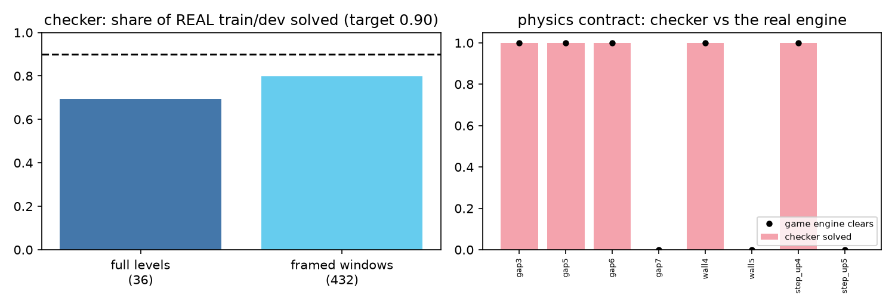
Figure 5. Left: share of real levels the checker solves. Right: the checker's accept/reject decisions against what the real engine can do.The model, guidance, thresholds and evaluation plan were frozen before the test set was touched (FROZEN.json, checkpoint sha256 f471e2a56c2c4432...); scripts/eval_test.py refuses to
run twice. Intervals resample the 6 held-out levels; with so few levels they are wide, and per-level results are given as well.
| Metric | P-test (137 prompts) | P-rand (100 prompts) |
|---|---|---|
| C-score | 0.819 [0.767, 0.861] | 0.348 (no level clusters, no interval) |
| exact match | 0.034 [0.016, 0.051] | 0.007 (no level clusters, no interval) |
| broken-structure rate (raw samples) | 0.102 [0.050, 0.168] | 0.377 (no level clusters, no interval) |
| floor validity | 1.000 [1.000, 1.000] | 1.000 (no level clusters, no interval) |
| checker-verified rate (framed windows; diagnostic) | 0.788 [0.700, 0.865] | 0.733 (no level clusters, no interval) |
| median nearest-train Hamming / copy rate | 13.000 / 0.080 | 28.000 / 0.037 |
| rare-concept exact match | 0.577 | 0.182 |
Reference rows (the same prompts, a generator that ignores them): null 0.463, always-empty 0.495, always "full floor" 0.566, always the modal caption 0.626. A C-score must always be read against these (an empty level already scores about 0.55 because absent topics earn credit). P-casual-test (30 held-out casual prompts through the normalizer): scene-count accuracy 0.967, C-score of generated scenes against the expected captions 0.748.
Per held-out level (P-test)
| level | samples | C-score | exact match | broken rate | floor validity |
|---|---|---|---|---|---|
| SMB1 1-2 | 54 | 0.6893 | 0.0000 | 0.1111 | 1.0000 |
| SMB1 3-1 | 69 | 0.8660 | 0.0725 | 0.0435 | 1.0000 |
| SMB1 6-3 | 57 | 0.8964 | 0.0351 | 0.0000 | 1.0000 |
| SMB2 2-2 | 93 | 0.8452 | 0.0430 | 0.0860 | 1.0000 |
| SMB2 B-1 | 69 | 0.8145 | 0.0145 | 0.1159 | 1.0000 |
| SMB2 D-1 | 69 | 0.7800 | 0.0290 | 0.2464 | 1.0000 |
Per concept (P-test)
| concept | support | precision | recall | F1 | exact match | bucket MAE |
|---|---|---|---|---|---|---|
| floor | 396 | 1.000 | 0.990 | 0.995 | 0.790 | 0.305 |
| ceiling | 51 | 0.927 | 1.000 | 0.962 | 0.922 | 0.000 |
| upside down pipe | 15 | 0.800 | 0.800 | 0.800 | 0.600 | 0.250 |
| pipe | 147 | 0.903 | 0.884 | 0.893 | 0.503 | 0.446 |
| coin line | 102 | 0.959 | 0.922 | 0.940 | 0.676 | 0.277 |
| coin | 108 | 0.963 | 0.972 | 0.968 | 0.315 | 0.876 |
| platform | 228 | 0.825 | 0.912 | 0.867 | 0.496 | 0.524 |
| tower | 84 | 0.806 | 0.643 | 0.715 | 0.429 | 0.407 |
| cannon | 27 | 0.875 | 0.778 | 0.824 | 0.407 | 0.667 |
| ascending staircase | 42 | 0.804 | 0.976 | 0.882 | 0.762 | 0.220 |
| descending staircase | 12 | 0.286 | 0.167 | 0.211 | 0.083 | 0.500 |
| rectangular | 42 | 0.398 | 0.786 | 0.528 | 0.524 | 0.364 |
| irregular | 21 | 0.179 | 0.667 | 0.283 | 0.333 | 0.643 |
| question block | 93 | 0.988 | 0.892 | 0.938 | 0.344 | 0.747 |
| loose block | 168 | 0.640 | 0.655 | 0.647 | 0.256 | 0.945 |
| enem | 333 | 0.964 | 0.877 | 0.918 | 0.366 | 0.712 |
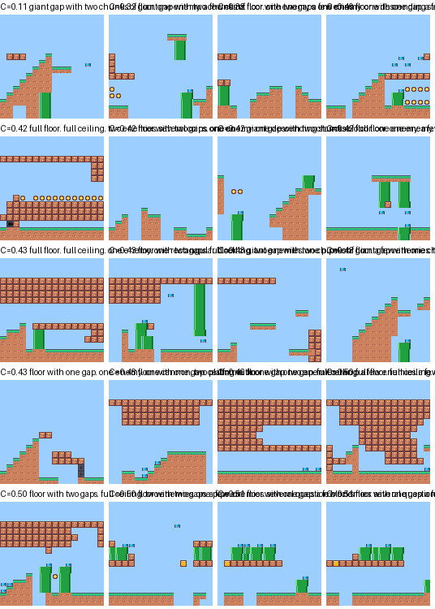
Figure 21. The 20 lowest-scoring test samples (prompt and C-score above each).Error analysis. Held-out levels score well on prompts built from real windows (C-score far above the prompt-ignoring null and above every constant generator) but a second set of random seven-topic prompts (P-rand) is a stress test the model fails: its C-score is below an always-empty generator, because unseen topic combinations produce broken structures (each costs 2/18 of the C-score) and over-generated phrases. P-rand has no source levels, so it has no level-clustered interval and no cross-level null. The per-concept table shows rare and countable concepts are weakest; the failure gallery shows the 20 worst samples; reports/final/NOTES.md records the one crashed-then-repeated run of the test script.
| Evidence | Where |
|---|---|
| 257 fast automated tests passing | tests/, reports/testing/pytest_summary.json |
| representative inputs: normalizer dev set, 12 C-score golden vectors, checker micro-levels, 4 example prompts end to end | tests/, reports/gates/* |
| invalid and boundary inputs: empty / whitespace / None / over-long / control-character prompts, out-of-range seed / w / width, malformed levels (9 schema violations) | tests/test_level_schema.py |
| consistency: same prompt + seed + settings gives the same level (identical: True); a different seed changes 0.083 of the cells; one window sampled alone or inside a batch is identical (1.000 of cells); checker and normalizer deterministic | scripts/check_determinism.py, reports/gates/determinism.json, tests/test_full_level.py, tests/test_checker.py |
| fuzzing: arbitrary text and random tile grids never crash the normalizer, validators, detector, sanitizer or checker | tests/test_app_fuzz.py |
| the real Streamlit app driven by Streamlit's AppTest (valid, empty, over-long, unrecognised prompts, example chip) | tests/test_app_ui.py |
| end-to-end: the real game in headless Chromium (canvas, key presses, ghost-bot wins a level) | tests/e2e/ |
| leakage and one-shot guards | tests/test_one_shot_guards.py, tests/test_splits.py |
| gates | reports/gates/*/RESULT.json (pass/fail recorded honestly) |
DEPLOY.md).We built and evaluated a complete text-to-level system: a diffusion model with text conditioning and classifier-free guidance, a normalizer that makes free text usable, outpainting for long levels, a checker that backs a "verified beatable" badge, a game that runs the same physics, and a Streamlit app around all of it, with a level-grouped, one-shot evaluation. Where gates failed (G-P3, G-P5b, the checker's real-level target) the report says so, shows the evidence, and applies the documented fallback instead of weakening the claim.
uv venv --python 3.12 .venv && uv pip install torch==2.15.0 --index-url https://download.pytorch.org/whl/cu132 && uv pip install -r requirements-dev.txt
python scripts/fetch_data.py && python scripts/build_index.py && python scripts/fetch_models.py && python scripts/fetch_assets.py && python scripts/make_atlas.py
python -m text2mario.train.train --config configs/cond_main.yaml --run-dir runs/C-main # PYTHONPATH=src
python scripts/gate_p4.py --ckpt runs/C-main/step_XXXXXXX.pt && python scripts/gate_p5.py --ckpt runs/C-main/step_XXXXXXX.pt
python scripts/freeze.py --ckpt ... --w ... && python scripts/eval_test.py
python scripts/export_cloud_ckpt.py runs/C-main/step_XXXXXXX.pt && streamlit run app/streamlit_app.py